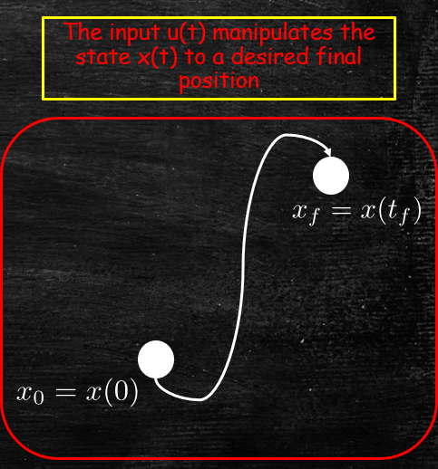

Jonathan Crofts
Nottingham Trent University
Recall that we previously found that the equation
\[ \frac{\mathrm{d}\mathbf{x}}{\mathrm{d}t} = A\mathbf{x}+\mathbf{f}(t): \quad \mathbf{x}(0)=\mathbf{x}_0 \]Has solution
\[ \color{magenta}{\boxed{\color{white}{ \mathbf{x}(t) = e^{At}\mathbf{x}_0+\int_0^te^{A(t-\tau)}\mathbf{f}(\tau)\mathrm{f}\tau }}} \]Now, suppose we consider the following form of inhomogeneity
\[ \mathbf{f}(t) = B\mathbf{u}(t) \quad\text{where}\quad B\in\mathbb{R}^{n\times p} \]And
\[ \mathbf{u}(t)=\begin{bmatrix}u^{(1)}(t)&u^{(2)}(t)&\ldots&u^{(p)}(t)\end{bmatrix}^T\in\mathbb{R}^p \]Then...
...The system of ODEs becomes
\[ \frac{\mathrm{d}\mathbf{x}}{\mathrm{d}t} = A\mathbf{x}+B\mathbf{u}(t): \quad \mathbf{x}(0)=\mathbf{x}_0 \]And the solution
\[ \begin{align*} \mathbf{x}(t_f)&=e^{At_f}\mathbf{x}_0+\int_0^{t_f}e^{A(t_f-\tau)}B\mathbf{u}(\tau)\mathrm{d}\tau\\ &=e^{At_f}\mathbf{x}_0+\int_0^{t_f}e^{A\tau}B\mathbf{u}(t_f-\tau)\mathrm{d}\tau \end{align*} \]We say that the function $\mathbf{u}(t)$ is a control function and the aim is to choose it so that we can 'control' the system from a point $\mathbf{x}_0$ at time $t=0$ to a point $\mathbf{x}_f$ at time $t=t_f$
Real-world controllability problems include, for example:
What is $\mathbf{x}_0$ and $\mathbf{x}_f$ in the above examples?
Given $t_f\in\mathbb{R}$ and $\mathbf{x}_0, \mathbf{x}_f\in\mathbb{R}^n$ a system of the form
\[ \frac{\mathrm{d}\mathbf{x}}{\mathrm{d}t} = A\mathbf{x}+B\mathbf{u}(t):\quad \mathbf{x}(0)=\mathbf{x}_0 \]is said to be controllable on the interval $[0, t_f]$ if there exists a control $\mathbf{u}(t)$ defined on $[0, t_f]$ such that if $\mathbf{x}(0)=\mathbf{x}_0$ then $\mathbf{x}(t_f)=\mathbf{x}_f$
Over the next few lectures we shall derive conditions for such a system to be controllable
It can be shown that a system is controllable on $[0, t_f]$ iff the following matrix is nonsingular
\[ W(0,t_f) = \int_0^{t_f}e^{A\tau}BB^Te^{A^T\tau}\mathrm{d}\tau \]To see this suppose that $W$ is nonsingular and set
\[ \mathbf{u}(t) = B^Te^{A^T(t_f-t)}W^{-1}(0,t_f)\left[\mathbf{x}_f-e^{At_f}\mathbf{x}_0\right] \]Substituting this into the solution of our ODE gives
\[ \begin{align*} \mathbf{x}_f &=e^{At_f}\mathbf{x}_0+\int_0^{t_f}e^{A(t_f-\tau)}B\mathbf{u}(\tau)\mathrm{d}\tau\\ &=e^{At_f}\mathbf{x}_0+\int_0^{t_f}e^{A(t_f-\tau)}BB^Te^{A^T(t_f-\tau)}W^{-1}(0,t_f)\left[\mathbf{x}_f-e^{At_f}\mathbf{x}_0\right]\mathrm{d}\tau\\ &= e^{At_f}\mathbf{x}_0+\color{red}{\boxed{\color{white}{\int_0^{t_f}e^{A(t_f-\tau)}BB^Te^{A^T(t_f-\tau)}\mathrm{d}\tau}}}\color{white}{ \cdot W^{-1}(0,t_f)\left[\mathbf{x}_f-e^{At_f}\mathbf{x}_0\right]} \end{align*} \]The integral in the red box looks a lot like $\displaystyle W(0,t_f)$ ...
Let $\xi=t_f-\tau$
Then we can rewrite the integral
\[ \int_0^{t_f}e^{A(t_f-\tau)}BB^Te^{A^T(t_f-\tau)}\mathrm{d}\tau = \int_0^{t_f}e^{A\xi}BB^Te^{A^T\xi}\mathrm{d}\xi=W(0,t_f) \]This means we can write the RHS of the last equation on the previous slide as
\[ \begin{align*} e^{At_f}\mathbf{x}_0+\int_0^{t_f}e^{A(t_f-\tau)}BB^Te^{A^T(t_f-\tau)}\mathrm{d}\tau \cdot W^{-1}(0,t_f)\left[\mathbf{x}_f-e^{At_f}\mathbf{x}_0\right] &= e^{At_f}\mathbf{x}_0+W(0,t_f)W^{-1}(0,t_f)\left[\mathbf{x}_f-e^{At_f}\mathbf{x}_0\right]\\ &=e^{At_f}\mathbf{x}_0+\mathbf{x}_f-e^{At_f}\mathbf{x}_0\\ &=\mathbf{x}_f \end{align*} \]Which gives the required result
Thus if $W(0,t_f)$ is nonsingular (i.e. invertible) then we can control the system of ODEs
To show controllability implies nonsingularity of $W(0,t_f)$ we suppose instead that $W(0, t_f)$ is singular
For a singular matrix we can always find non-zero solutions to the equation
\[ \mathbf{x}_1^TW(0,t_f)=\mathbf{0} \]So that
\[ \mathbf{x}_1^TW(0,t_f)\mathbf{x}_1=0 \]And
\[ \begin{align*} \mathbf{x}_1^TW(0,t_f)\mathbf{x}_1&=\mathbf{x}_1^T\int_0^{t_f}e^{A\tau}BB^Te^{A^t\tau}\mathrm{d}\tau\mathbf{x}_1\\ &=\int_0^{t_f}\left(\mathbf{x}_1^Te^{A\tau}B\right)\cdot\left(B^Te^{A^t\tau}\mathbf{x}_1\right)\mathrm{d}\tau\\ &=\int_0^{t_f}\left(B^Te^{A^t\tau}\mathbf{x}_1\right)^T\cdot\left(B^Te^{A^t\tau}\mathbf{x}_1\right)\mathrm{d}\tau = \int_0^{t_f}||B^Te^{A^T\tau}\mathbf{x}_1||^2\mathrm{d}\tau \end{align*} \]Now since
\[ \int_0^{t_f}||B^Te^{A^T\tau}\mathbf{x}_1||^2\mathrm{d}\tau = 0 \]We deduce that
\[ B^Te^{A^T\tau}\mathbf{x}_1 = \mathbf{x}_1^Te^{A\tau}B = 0 \]Now if a system is controllable we can take it from $0$ at time $t=0$ to $\mathbf{x}_1$ at time $t=t_f$ so that
\[ \mathbf{x}(t_f) = \mathbf{x}_1=e^{At_f}\cdot\mathbf{0}+\int_0^{t_f}e^{A\tau}B\mathbf{u}(t_f-\tau)\mathrm{d}\tau =\int_0^{t_f}e^{A\tau}B\mathbf{u}(t_f-\tau)\mathrm{d}\tau \]Thus
\[ \color{#00FF00}{\boxed{\color{white}{ \begin{align*} \mathbf{x}_1^T\mathbf{x}_1 =\mathbf{x}_1^T\int_0^{t_f}e^{A\tau}B\mathbf{u}(t_f-\tau)\mathrm{d}\tau&=\int_0^{t_f}\mathbf{x}_1^Te^{A\tau}B\mathbf{u}(t_f-\tau)\mathrm{d}\tau\\ &=0 \implies \text{a contradiction since $\mathbf{x}_1$ was assumed non-zero} \end{align*} }}} \]Show that the system
\[ \frac{\mathrm{d}}{\mathrm{d}t}\begin{bmatrix}x^{(1)}\\x^{(2)}\end{bmatrix} = \begin{bmatrix}1&-1\\1&-1\end{bmatrix}\begin{bmatrix}x^{(1)}\\x^{(2)}\end{bmatrix}+\begin{bmatrix}1\\0\end{bmatrix}u \]Is controllable
Note that it is sometimes easier to check that no non-zero solutions of the equation
\[ \mathbf{x}^Te^{At}B=0 \]exist. This is equivalent to showing that $W(0,t_f)$ is non-singular
Thus we need to compute $e^{At}$, where
\[ A = \begin{bmatrix}1&-1\\1&-1\end{bmatrix} \]The characteristic polynomial of $A$ is
\[ \chi_A(t) = \begin{vmatrix}1-t&-1\\1&-1-t\end{vmatrix} = (1-t)(-1+-t)+1 = t^2 \]To find the eigenvectors we solve
\[ A\mathbf{u}=\mathbf{0}\implies \begin{bmatrix}1&-1\\1&-1\end{bmatrix}\mathbf{u}=\mathbf{0}\quad\text{or}\quad \begin{bmatrix}1&-1\\0&0\end{bmatrix}\mathbf{u}=\mathbf{0} \]So that the eigenspace is given by
\[ \color{magenta}{\boxed{\color{white}{ \Biggl \{ \alpha\begin{bmatrix}1\\1\end{bmatrix}: \alpha\in\mathbb{R} \Biggr \} }}} \]To find a generalised eigenvector we choose any vector not in the eigenspace e.g. $\displaystyle \mathbf{v}=\begin{bmatrix}0&-1\end{bmatrix}^T$ which has related eigenvector
\[ \mathbf{u} = \begin{bmatrix}1&-1\\1&-1\end{bmatrix}\begin{bmatrix}0\\-1\end{bmatrix} = \begin{bmatrix}1\\1\end{bmatrix}\implies \color{#00FF00}{\boxed{\color{white}{ H =\begin{bmatrix}1&0\\1&-1\end{bmatrix} = H^{-1} \quad\text{and}\quad J=\begin{bmatrix}0&1\\0&0\end{bmatrix} }}} \]It follows that
\[ \begin{align*} e^{At} = He^{Jt}H^{-1} &= \begin{bmatrix}1&0\\1&-1\end{bmatrix} \begin{bmatrix}1&t\\0&1\end{bmatrix}\begin{bmatrix}1&0\\1&-1\end{bmatrix}\\ &=\begin{bmatrix}1&0\\1&-1\end{bmatrix}\begin{bmatrix}1+t&-t\\1&-1\end{bmatrix} = \color{#00FF00}{\boxed{\color{white}{\begin{bmatrix}1+t&-t\\t&1-t\end{bmatrix}}}} \end{align*} \]Now
\[ e^{At}B = \begin{bmatrix}1+t&-t\\t&1-t\end{bmatrix}\begin{bmatrix}1\\0\end{bmatrix} = \begin{bmatrix}1+t\\t\end{bmatrix} \]And setting $\displaystyle \mathbf{x}=\begin{bmatrix}\alpha&\beta\end{bmatrix}^T$ arbitrarily
\[ \mathbf{x}^Te^{At}B = \begin{bmatrix}\alpha&\beta\end{bmatrix}^T\begin{bmatrix}1+t\\t\end{bmatrix} = \alpha +(\alpha + \beta)t = 0 \]Which $\displaystyle \implies \alpha = \alpha+\beta = 0$ so that $\mathbf{x}=0$
We see that no non-zero solutions exist and so the system is controllable